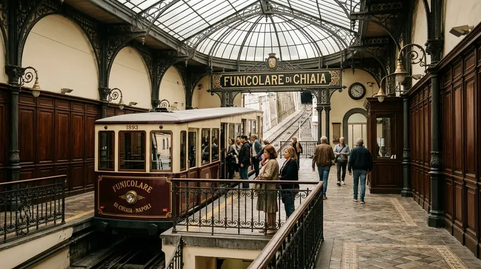

01 La città dall'alto
Il centro storico a cinque minuti, il Golfo ai tuoi piedi
Dormire al Vomero significa vivere due città in una: l'energia di Spaccanapoli e del lungomare durante il giorno, il fresco dei viali alberati e dei belvedere la sera.
01 Perché il Vomero
Un quartiere residenziale sicuro, connesso a ogni meraviglia
Costruito tra fine Ottocento e primo Novecento, il Vomero custodisce villini Liberty, piazze pedonali alberate e il parco della Villa Floridiana affacciato sul mare.
Dalle terrazze di San Martino e da Via Aniello Falcone lo sguardo abbraccia l'intero Golfo di Napoli, dal Vesuvio fino a Capri, prima di scendere in pochi minuti nel cuore antico con le storiche funicolari.
02 Distanze verificate dalla struttura
Sei tappe essenziali partendo da casa
-
10 min a piedi
Castel Sant'Elmo e San Martino
La fortezza stellare scavata nel tufo giallo e i chiostri della Certosa offrono il punto panoramico a 360° più spettacolare su Napoli.
-

5 min in funicolare
Spaccanapoli e i Decumani
Cappella Sansevero, il Chiostro Maiolicato di Santa Chiara, San Gregorio Armeno e le botteghe storiche del centro antico.
-

12 min con Funicolare di Chiaia
Castel dell'Ovo e Lungomare
Passeggiata pedonale a fior d'acqua tra Piazza del Plebiscito, il Borgo Marinari e Via Caracciolo al tramonto.
-

A 300 metri dal B&B
Le Funicolari Storiche
Centrale, Chiaia e Montesanto uniscono la collina a Via Toledo e al centro storico; la linea di Mergellina scende verso il mare di Posillipo.
-

3 min a piedi
Piazza Vanvitelli e Villa Floridiana
Il salotto pedonale del Vomero: librerie indipendenti, caffè storici e il parco reale con belvedere a picco sul Golfo.
-

La sera sul colle
I belvedere di Via Aniello Falcone
Al calar del sole le luci del golfo si accendono sotto i tornanti panoramici del Vomero, tra enoteche e bistrot frequentati dai napoletani.
03 Il consiglio dell'host
La discesa a piedi lungo la Pedamentina di San Martino
Un percorso pedonale del XIV secolo: 414 gradini larghi in piperno e tufo che scendono da San Martino tra giardini di limoni e silenzi inattesi, con il mare sempre di fronte.
- Durata
- 25 minuti in discesa comoda fino a Corso Vittorio Emanuele, più 10 minuti per raggiungere Spaccanapoli.
- Luce migliore
- Tra le 8:30 e le 10:00 del mattino (dopo la colazione) oppure un'ora prima del tramonto.
- Rientro
- Risalita senza fatica in 5 minuti con la Funicolare di Montesanto o la Funicolare Centrale fino a Piazza Vanvitelli.